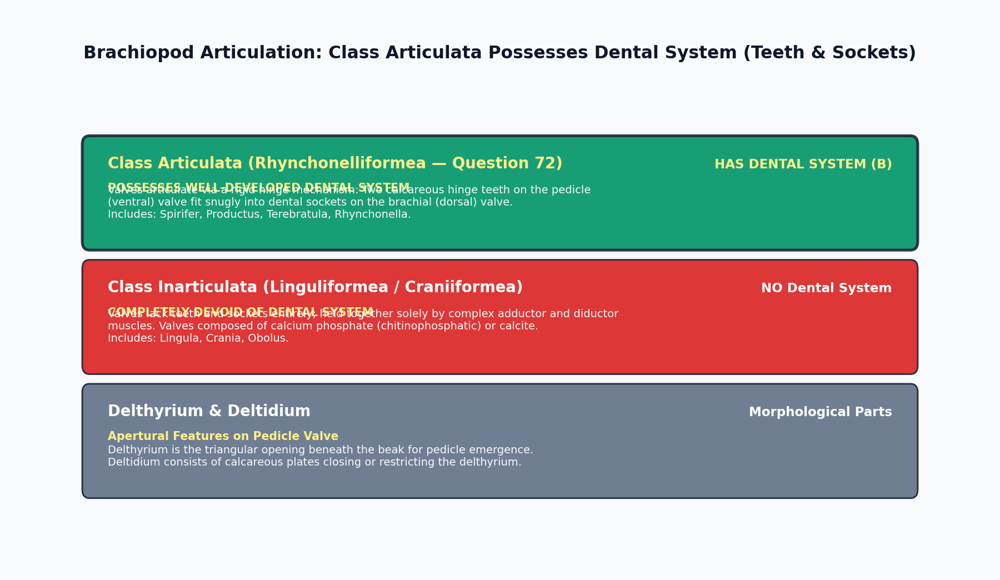

The Phylum Brachiopoda (lamp shells) comprises solitary, marine, coelomate lophophorate invertebrates possessing a bivalved bilateral shell. In classical and modern paleontology, the entire phylum is fundamentally divided into two major classes based upon the presence or absence of an articulating dental hinge mechanism: Class Articulata and Class Inarticulata.

| Morphological Feature | Class Articulata (Rhynchonelliformea) | Class Inarticulata (Linguliformea / Craniiformea) |
|---|---|---|
| Dental System (Hinge) | PRESENT: Rigid teeth on pedicle valve & sockets on brachial valve | ABSENT: No teeth or sockets; valves unhinged |
| Valve Mineralogy | Calcite (Low-Mg Calcite with organic fibers) | Chitinophosphate (Organo-apatite) or Calcite |
| Opening Mechanism | Diductor muscles pulling on the cardinal process | Complex oblique and sliding lateral muscles |
| Internal Arm Support | Calcareous brachidium (loops or spiralia) | No calcareous brachidium; soft fleshy lophophore |
| Representative Genera | Spirifer, Terebratula, Productus, Rhynchonella | Lingula, Crania, Obolus, Discinisca |